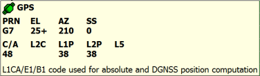

In the Real-Time Logging mode, Elevation Mask for raw measurements logging is set. Because of this elevation mask, some satellites may be absent in the list. Still, they are tracked and are used for receiver's position computation.
The SVs tab displays the list of satellites and their parameters.
| • | There are common columns for all constellation: |
| Parameter name | Description |
| EL | Elevation angle in degrees. The signs "+" and "-" next to the elevation angle indicate that the corresponding satellites are either ascending or descending, respectively. If a satellite is at maximum elevation, it is marked with "^" sign. If a satellite is at minimum elevation, it is marked with "" sign. |
| AZ | Azimuth in degrees. |
| TC | Tracking time for the corresponding satellite. This time is given in minutes. Or in seconds, if the symbol ":" is specified in the column. |
| SS | Satellite navigation status. |
| • | Columns for GPS constellation ( color is used as background for the columns): |
| Parameter name | Description |
| PRN | Icon of satellite and satellite number for the GPS constellation. |
| C/A | Signal-to-Noise Ratio of the L1 C/A measurements [dB*Hz]. |
| L2C | Signal-to-Noise Ratio of the L2 C measurements [dB*Hz]. |
| L1P | Signal-to-Noise Ratio of the L1 P measurements [dB*Hz]. |
| L2P | Signal-to-Noise Ratio of the L2 P measurements [dB*Hz]. |
| L5 | Signal-to-Noise Ratio of the L5 measurements [dB*Hz]. |
| • | Columns for GLONASS constellation ( color is used as background for the columns): |
| Parameter name | Description |
| SN | Icon of satellite and satellite's orbital slot number |
| C/A | Signal-to-Noise Ratio of the L1 C/A measurements [dB*Hz]. |
| L2CA | Signal-to-Noise Ratio of the L2 C/A measurements [dB*Hz]. |
| L1P | Signal-to-Noise Ratio of the L1 P measurements [dB*Hz]. |
| L2P | Signal-to-Noise Ratio of the L2 P measurements [dB*Hz]. |
| L3 | Signal-to-Noise Ratio of the L3 measurements [dB*Hz]. |
| FCN | Frequency Channel Number. |
| • | Columns for Galileo constellation ( color is used as background for the columns): |
| Parameter name | Description |
| PRN | Icon of satellite and satellite number for the Galileo constellation. |
| E1 | Signal-to-Noise Ratio of the E1 measurements [dB*Hz]. |
| E5a | Signal-to-Noise Ratio of the E5a measurements [dB*Hz]. |
| E5b | Signal-to-Noise Ratio of the E5b measurements dB*Hz]. |
| E5ab | Signal-to-Noise Ratio of the E5 AltBoc measurements [dB*Hz]. |
| E6 | Signal-to-Noise Ratio of the E6 measurements [dB*Hz]. |
| • | Columns for BeiDou constellation ( color is used as background for the columns): |
| Parameter name | Description |
| PRN | Icon of satellite and satellite number for the BeiDou constellation. |
| B1 | Signal-to-Noise Ratio of the B1 measurements [dB*Hz]. |
| B1C | Signal-to-Noise Ratio of the B1C measurements [dB*Hz]. |
| B2b | Signal-to-Noise Ratio of the B2b measurements [dB*Hz]. |
| B2a | Signal-to-Noise Ratio of the B2a measurements [dB*Hz]. |
| B3 | Signal-to-Noise Ratio of the B3 measurements [dB*Hz]. |
| • | Columns for SBAS constellation ( color is used as background for the columns): |
| Parameter name | Description |
| PRN | Icon of satellite and satellite number for the SBAS constellation. |
| C/A | Signal-to-Noise Ratio of the L1 C/A measurements [dB*Hz]. |
| L5 | Signal-to-Noise Ratio of the L5 measurements [dB*Hz]. |
| • | Columns for QZSS constellation ( color is used as background for the columns): |
| Parameter name | Description |
| PRN | Icon of satellite and satellite number for the QZSS constellation. |
| C/A | Signal-to-Noise Ratio of the L1 C/A measurements [dB*Hz]. |
| L1C | Signal-to-Noise Ratio of the L1C measurements [dB*Hz]. |
| L2C | Signal-to-Noise Ratio of the L2C measurements [dB*Hz]. |
| L5 | Signal-to-Noise Ratio of the L5 measurements [dB*Hz]. |
| LEX | Signal-to-Noise Ratio of the LEX measurements [dB*Hz]. |
| • | Columns for IRNSS constellation ( color is used as background for the columns): |
| Parameter name | Description |
| PRN | Icon of satellite and satellite number for the IRNSS constellation. |
| L5A | Signal-to-Noise Ratio of the L5A measurements [dB*Hz]. |
Clicking a satellite in the list opens a tool tip for the satellite. The tool tip displays all the satellite information the list control contains. The Satellite Navigation Status is decoded to display a legible description. The tip is closed after clicking on it, or automatically after 5 seconds.

The list of satellites is updated once a second. If Topcon Receiver Utility does not receive any information from a satellite, the satellite does not disappear immediately from the list, but is still displayed in the paling color for 10 seconds. If there is no signal from the satellite during these 10 seconds, the satellite will completely disappear.
|
|
In the Real-Time Logging mode, Elevation Mask for raw measurements logging is set. Because of this elevation mask, some satellites may be absent in the list. Still, they are tracked and are used for receiver's position computation. |
|
|
If the Detect Ionospheric Scintillations check box is selected in the Base tab and the satellite signals are affected by scintillations, for such satellites the following icons are displayed: |
 or
or  .
.